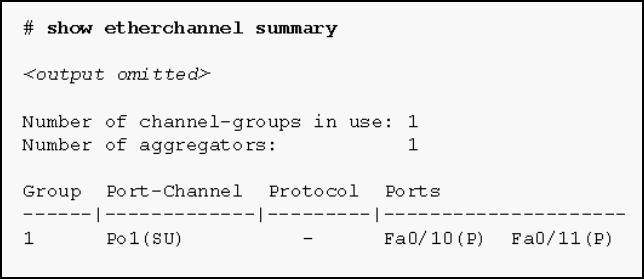

1.Consulte la presentación. Según el resultado del comando que se muestra, ¿cuál es el estado del EtherChannel?
-

- El EtherChannel está en uso y es funcional como lo indican los indicadores SU y P en la salida del comando. *
- El EtherChannel es dinámico y está utilizando los puertos Fa0 / 10 y Fa0 / 11 como puertos pasivos.
- El EtherChannel está inactivo, como lo demuestra el campo de protocolo que está vacío.
- El EtherChannel es parcialmente funcional como lo indican las banderas P para los puertos FastEthernet.
- @javi__super
2.Consulte la presentación. Un ingeniero de redes está resolviendo problemas en la conectividad del host en una LAN que utiliza un protocolo de redundancia de primer salto. ¿Qué dirección de puerta de enlace IPv4 debe configurarse en el host?
- 192.168.2.100 *
- 192.168.2.0
- 192.168.2.1
- 192.168.2.2
- @javi__super
3.¿Cuál es el propósito de HSRP?
- Proporciona una conexión de red continua cuando falla un enrutador. *
- Evita que un interruptor no autorizado se convierta en la raíz STP.
- Evita que los hosts maliciosos se conecten a los puertos troncales.
- Permite que un puerto de acceso pase inmediatamente al estado de reenvío.
- @javi__super
4.Consulte la presentación. Se configuró un EtherChannel entre los switches S1 y S2, pero las interfaces no forman un EtherChannel. ¿Cuál es el problema?
- EtherChannel no se configuró con el mismo rango permitido de VLAN en cada interfaz. *
- Los puertos del switch deben configurarse como puertos de acceso, ya que cada puerto tiene una VLAN asignada.
- El número de canal de puerto de la interfaz debe ser diferente en cada conmutador.
- Los puertos del switch no se configuraron con velocidad y modo dúplex.
- @javi__super
5.¿Cuál es una ventaja de usar LACP?
- Permite la formación automática de enlaces EtherChannel *
- aumenta la redundancia a los dispositivos de Capa 3 y disminuye la cantidad de configuración que se necesita en un switch para EtherChannel
- proporciona un entorno simulado para probar la agregación de enlaces
- Disminuye la posibilidad de un bucle de árbol de expansión.
- @javi__super
6.¿Qué es un requisito para configurar un enlace EtherChannel entre dos conmutadores?
- El rango permitido de VLAN debe ser el mismo en ambos switches. *
- A las interfaces participantes se les debe asignar el mismo número de VLAN en ambos switches.
- Las interfaces participantes deben estar en el mismo módulo en un switch.
- Las interfaces participantes deben ser físicamente contiguas en un switch.
- @javi__super
7.Un administrador de red desea asegurarse de que el enrutador R1 siempre sea elegido como enrutador activo para un grupo HSRP. ¿Qué conjunto de comandos aseguraría los resultados requeridos?
- R1 (config-if) # dirección ip 192.168.1.100 255.255.255.0
R1 (config-if) # standby 1 ip 192.168.1.1
R1 (config-if) # standby 1 preempt
R1 (config-if) # no shutdown * - R1 (config-if) # dirección IP 192.168.1.250 255.255.255.0
R1 (config-if) # standby 1 ip 192.168.1.1
R1 (config-if) # sin apagado -
R1 (config-if) # dirección ip 192.168.1.100 255.255.255.0
R1 (config-if) # standby 1 ip 192.168.1.1
R1 (config-if) # standby 1 prioridad 1
R1 (config-if) # no apagado
-
R1 (config-if) # dirección ip 192.168.1.100 255.255.255.0
R1 (config-if) # standby 1 ip 192.168.1.1
R1 (config-if) # standby 1 prioridad 150
R1 (config-if) # sin apagado - @javi__super
8.Consulte la presentación. Un administrador de red configuró los enrutadores R1 y R2 como parte del grupo de HSRP 1. Después de que los enrutadores se hayan recargado, un usuario en Host1 se quejó de la falta de conectividad a Internet. El administrador de la red emitió el comando show standby brief en ambos enrutadores para verificar el HSRP operaciones Además, el administrador observó la tabla ARP en Host1. ¿Qué entrada se debe ver en la tabla ARP en Host1 para obtener conectividad a Internet?
- la dirección IP virtual y la dirección MAC virtual para el grupo HSRP 1 *
- la dirección IP virtual del grupo 1 de HSRP y la dirección MAC de R1
- La dirección IP y la dirección MAC de R1
- la dirección IP virtual del grupo 1 de HSRP y la dirección MAC de R2
- @javi__super
9.Rellena el espacio en blanco.
- En la operación FHRP, dos o más enrutadores se representan como un solo enrutador ________. Respuesta correcta: virtual *
- @javi__super
10.¿Cuál es la mejor práctica a usar antes de comenzar una implementación de EtherChannel?
- Apague cada una de las interfaces afectadas. *
- Habilitar cada una de las interfaces afectadas.
- Asigne las interfaces afectadas a la VLAN de administración.
- Asignar interfaces afectadas a la VLAN 1.
- @javi__super
11.¿Qué afirmación describe una implementación de EtherChannel?
- Un puerto troncal puede ser parte de un paquete EtherChannel. *
- EtherChannel opera solo en la Capa 2.
- EtherChannel puede admitir hasta un máximo de diez enlaces separados.
- PAgP no puede usarse junto con EtherChannel.
- @javi__super
12.Abra la actividad PT. Realice las tareas en las instrucciones de la actividad y luego responda la pregunta. ¿Cuáles son las dos razones por las que los mensajes de ping que se emiten desde Laptop0 hacia Laptop1 están fallando? (Escoge dos.)
- Las dos interfaces en cada uno de los conmutadores pertenecen a diferentes VLAN. *
- La interfaz VLAN 1 se apaga en ambos conmutadores.
- El modo de grupo de canales no está configurado correctamente en los interruptores.
- El grupo de canales debe configurarse como un enlace troncal en cada conmutador. *
- @javi__super
13.Consulte la presentación. Un administrador de red emitió el comando show etherchannel summary en el switch S1. ¿Qué conclusión se puede sacar?
- El EtherChannel no es funcional. *
- El EtherChannel está suspendido.
- Los puertos FastEthernet Fa0 / 1, Fa0 / 2 y Fa0 / 3 no se unen al EtherChannel.
- El protocolo de agregación de puertos PAgP está mal configurado.
- @javi__super
14.¿Qué combinación de modo PAgP establecerá un EtherChannel?
- interruptor 1 establecido en deseable; el interruptor 2 está configurado como deseable. *
- interruptor 1 configurado en auto; interruptor 2 configurado en auto.
- interruptor 1 puesto en encendido; Interruptor 2 ajustado a deseable.
- interruptor 1 configurado en auto; interruptor 2 puesto en encendido.
- @javi__super
15.Consulte la presentación. ¿Qué afirmación es cierta acerca de la salida del comando show standby?
- El enrutador está actualmente enviando paquetes. *
- La prioridad actual de este enrutador es 120.
- Este enrutador está siguiendo dos interfaces que funcionan correctamente.
- Este enrutador está en estado inactivo HSRP porque sus interfaces de seguimiento están inactivas.
- @javi__super

16.¿Qué tres opciones deben coincidir para establecer un EtherChannel entre dos conmutadores conectados directamente? (Elige tres.)
- configuración dúplex de las interfaces que se utilizan para EtherChannel *
- Pertenencia a VLAN de las interfaces que se utilizan para EtherChannel *
- velocidad de las interfaces que se utilizan para EtherChannel *
- Números de puerto que se utilizan para el EtherChannel
- @javi__super
17.¿Qué dos protocolos se utilizan para implementar EtherChannel? (Escoge dos.)
- Protocolo de control de agregación de enlaces *
- Protocolo de Agregación Portuaria *
- Protocolo de descubrimiento de Cisco
- Protocolo de árbol de expansión
- @javi__super
18.En la terminología FHRP, ¿qué representa un conjunto de enrutadores que presentan la ilusión de un solo enrutador a los hosts?
- enrutador virtual *
- enrutador de reenvío
- enrutador de reserva
- puerta de enlace predeterminada
- @javi__super
19.¿Qué comando se debe usar en SW2 para habilitar este EtherChannel?
- Modo SW2 (config-if-range) # canal-grupo 1 deseable *
- SW2 (config-if-range) # modo de grupo de canales 1 automático
- SW2 (config-if-range) # modo de grupo de canales 1 pasivo
- SW2 (config-if-range) # modo de grupo de canales 1 activo
- @javi__super
20.Se formó un enlace EtherChannel utilizando LACP entre dos interruptores, S1 y S2. Al verificar la configuración, ¿qué combinación de modo podría utilizarse en ambos conmutadores?
- S1-pasivo y S2-activo *
- S1-on y S2-active
- S1-pasivo y S2-pasivo
- S1-on y S2-pasivo
- @javi__super
21.¿Qué enunciado describe una característica de EtherChannel?
- Se hace combinando varios enlaces físicos que se ven como un enlace entre dos conmutadores. *
- Puede agrupar tipos mixtos de enlaces Ethernet de 100 Mb / sy 1Gb / s.
- Consiste en múltiples enlaces paralelos entre un conmutador y un enrutador.
- Puede combinar hasta un máximo de 4 enlaces físicos.
- @javi__super
22.Consulte la presentación. ¿Qué tecnología de conmutación permitiría que cada enlace de conmutador de capa de acceso se agregue para proporcionar más ancho de banda entre cada conmutador de Capa 2 y el conmutador de Capa 3?
- EtherChannel *
- HSRP
- trunking
- PortFast
- @javi__super
23.¿Qué afirmación es cierta con respecto al uso de PAgP para crear EtherChannels?
- Es propiedad de Cisco. *
- Requiere más enlaces físicos que LACP.
- Exige que se utilice un número par de puertos (2, 4, 6, etc.) para la agregación.
- Requiere dúplex completo.
- @javi__super
24.Consulte la presentación. Un administrador de red ha decidido que un EtherChannel entre los puertos 0/1 y 0/2 en los switches S1 y S2 ayudaría al rendimiento. Después de realizar la configuración, el administrador no nota ninguna ganancia de rendimiento. Según la salida que se muestra, ¿qué dos supuestos posibles podría hacer un administrador de red? (Escoge dos.)
- Uno de los puertos en S2 no estaba configurado correctamente. *
- El interruptor S2 no utilizó un modo EtherChannel compatible.
- El paquete EtherChannel está funcionando.
- El paquete EtherChannel no funciona. *
- @javi__super
25.¿Qué protocolo no propietario proporciona redundancia de enrutador para un grupo de enrutadores que admiten LAN IPv4?
- VRRPv2 *
- GLBP
- SLB
- HSRP
- @javi__super
26.Un administrador de red está configurando un enlace EtherChannel entre los conmutadores SW1 y SW2 mediante el comando SW1 (config-if-range) # modo pasivo de grupo de canales 1. ¿Qué comando se debe usar en SW2 para habilitar este EtherChannel?
- SW2 (config-if-range) # modo de grupo de canales 1 activo *
- SW2 (config-if-range) # modo de grupo de canales 1 deseable
- SW2 (config-if-range) # modo de grupo de canales 1 automático
- SW2 (config-if-range) # modo de grupo de canales 1 pasivo
- @javi__super
27.Haga coincidir la descripción con el comando correcto. (No se utilizan todas las opciones).
- Pregunta
- Respuesta
- @javi__super